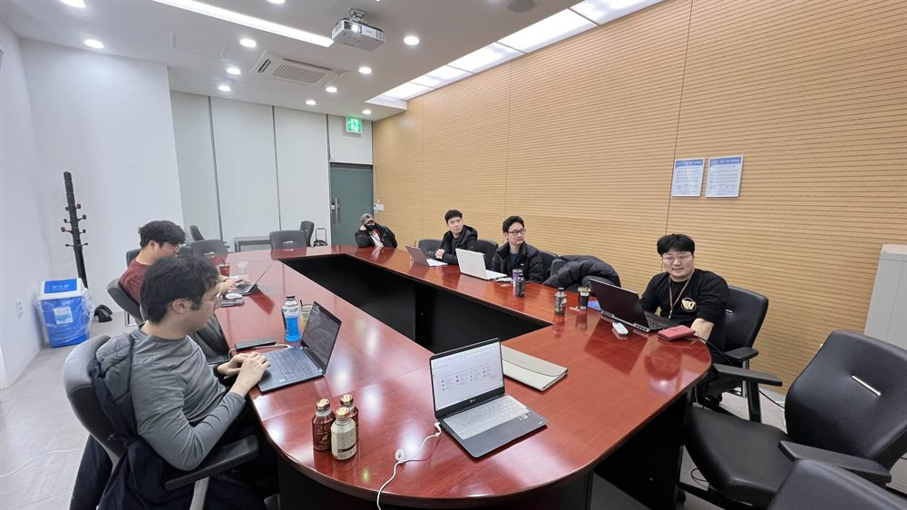

공직가치 · 미래역량 · 글로벌 리더십을 양성하는 대한민국 인재의 요람
국민에게 헌신하고 신뢰받는 대한민국 공직자를 양성하는 대한민국 최고 인재개발 플랫폼입니다.
국가공무원인재개발원은 1949년 출범 이래 국가의 대소사를 이끄는 동량들을 체계적으로 배출해 왔습니다. 헌법정신에 기초한 충직한 공직윤리 확립은 물론, 생성형 AI와 빅데이터, 미래 행정환경에 능동적으로 대처할 수 있는 실천적 교육훈련을 제공합니다.
공직 생애주기 전반에 걸친 4대 핵심 직무 및 미래 역량 강화 프로그램
5급 공채 합격자 대상 신임관리자과정부터 신임국장, 과장급 역량평가, 고위정책과정까지 단계별 리더십을 육성합니다.
국민에게 신뢰받는 공직자상을 구현하기 위해 헌법정신, 애국심, 반부패 청렴교육 및 사회봉사 체험을 진행합니다.
개발도상국 및 해외 고위 공무원 초청 연수를 통해 한국의 우수한 행정 시스템(K-행정)을 세계에 널리 공유합니다.
AI 기반 맞춤형 학습 플랫폼 나라배움터를 운영하고, 첨단 교수기법과 공공HRD 트렌드를 연구·보급합니다.
국민의 더 나은 삶을 만들기 위해 밤낮없이 연구하고 토론하는 교육생들의 순간들

정책 PBL 워크숍각 부처의 신임 공직자들이 복잡한 민생 현안을 주제로 실천적 해결책을 도출하기 위해 치열하게 의견을 나눕니다.
행정 빅데이터와 지능형 툴을 직접 조작하며 근거에 기반한 정책 기획서와 법령 개선안을 작성하는 실무 훈련입니다.
진천 본원 강의실에서 신임 사무관들이 선배 공직자 및 석학들과 함께 국정과제 정책 기획 실무를 심도 있게 학습합니다.
국가공무원인재개발원은 충북혁신도시의 진천 본원과 수도권의 과천 분원을 운영하고 있습니다. 참석하시는 교육 과정의 캠퍼스를 선택해 주세요.